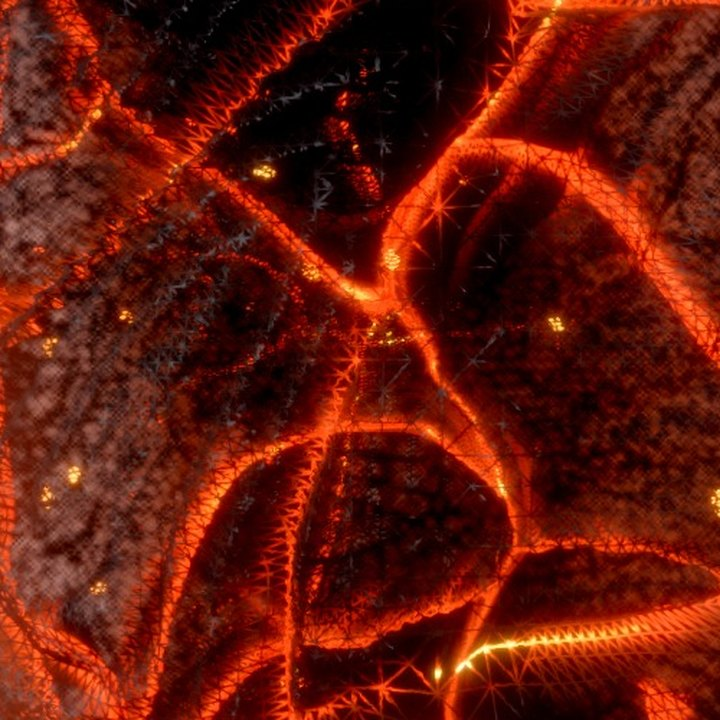
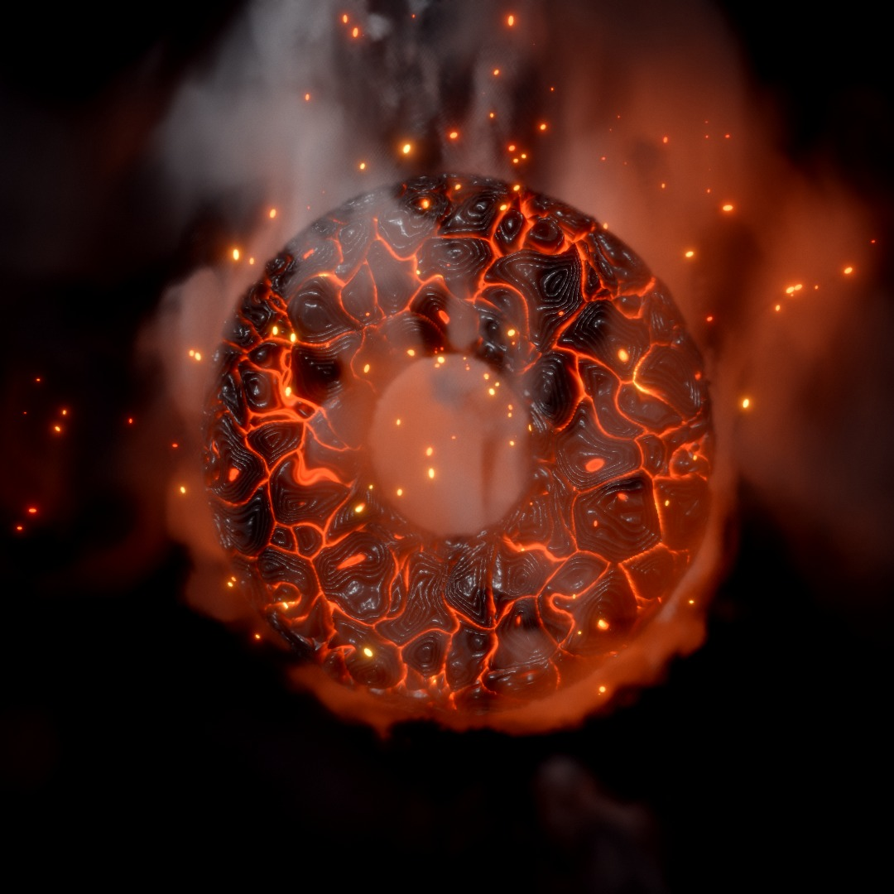
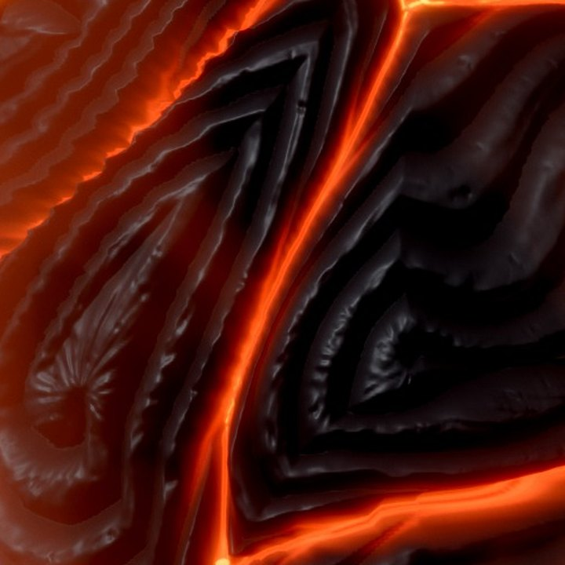
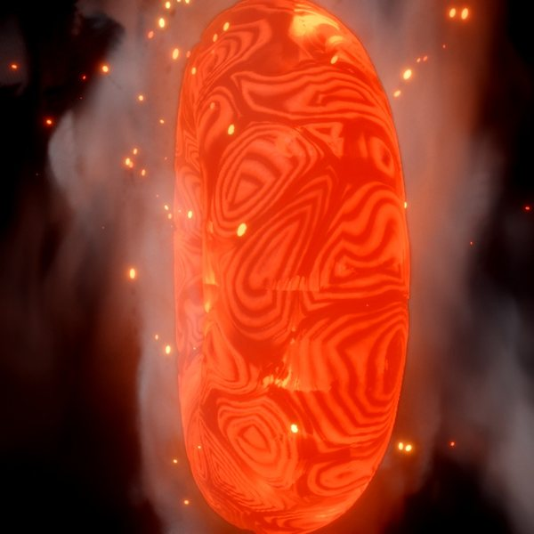
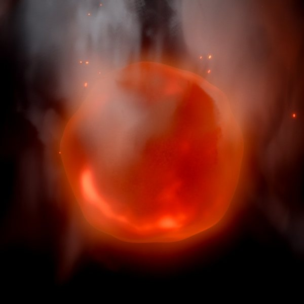
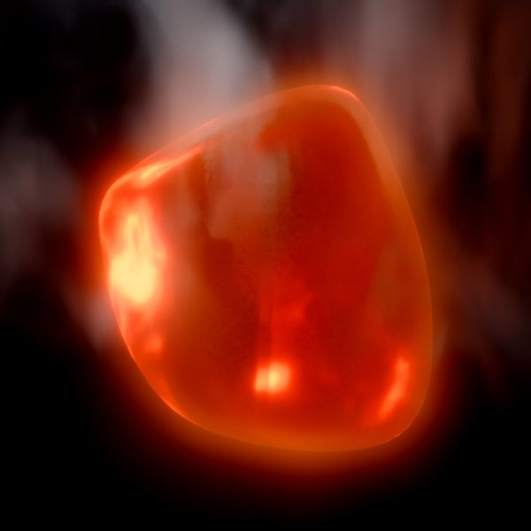
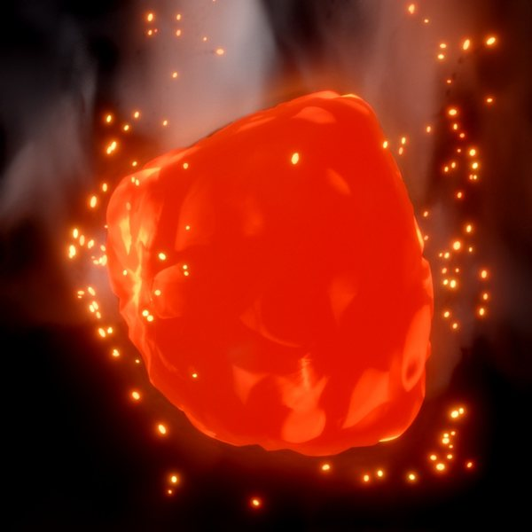
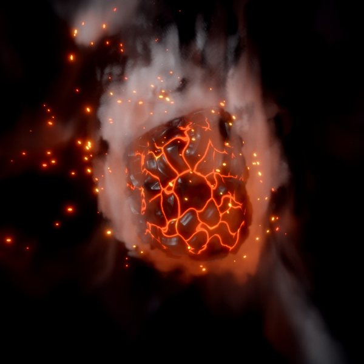
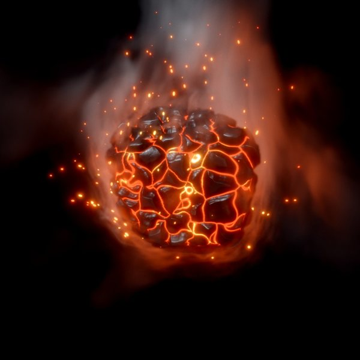
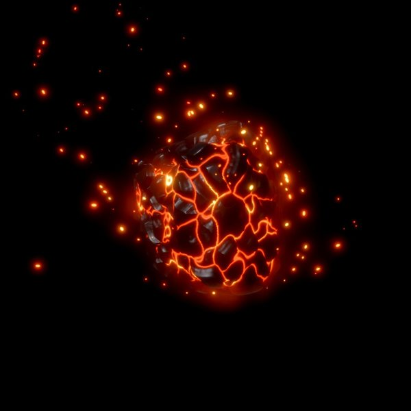

W: the adaptive wireframe
A Pahoehoe Coils torus up close: dense along the seams and ropes, coarser on the smooth lobes.
A rock of cooling crust over molten magma turns in a dark caldera. Its cracks glow and pulse, heat haze shimmers over it, embers rise, and smoke curls through a shaft of light. Every new look melts it into a sloshing pool and raises another. Here is how ten kinds of volcanic rock are baked from a fluid flowing on a sphere, how the relief becomes real geometry, how the lava is lit, and how the air around it is filled.
See it live
The prompt was Magma, and the look is a photograph of fresh lava: black crust split into plates over a glowing river, pillows of glassy rock with white-hot seams, pahoehoe wound into ropes, obsidian knapped into shells. The rock is cold and blue-black, lit by the sky, and the light comes from inside it. The piece makes one such rock at a time, in one of ten styles on one of a dozen shapes, and keeps it turning slowly in a dark room.
It renders through the shared photographic pipeline: soft shadows, ambient occlusion and bounce light, bloom and AgX tonemapping. What is particular to the day splits into two halves. A look is baked: a fluid simulation, the maps of the rock, its mesh and a few volumes around it are made once per rock and then only read. And a frame is live: the lava flows over the baked maps, the air glows and shimmers with it, embers fly, smoke is simulated and lit.
The rock is not textured with images. One full-screen fragment shader evaluates the rock analytically for every texel of an atlas and writes four numbers into a half-float target: height (0 to 1), heat (0 to about 1.25, up to 1.5 for two styles), a crust mask (1 where the rock is solid, 0 where it is molten) and a plate id (a per-cell value the material uses for colour and roughness). A style is one branch of that shader: #define uStyle N at the top, so each of the ten styles is its own program and only its own branch is compiled. The first style's programs compile during the loading screen; the other nine compile in the background once the page is up, so switching to a new style never stalls.
Every style works in the same coordinate: a point on the unit sphere, carried by the fluid (next section), multiplied by the style's scale and offset by a per-seed vector. On that, each builds its rock from a small kit: a two-pass Euclidean 3D Voronoi that returns the exact distance to the cell's edge (so cracks have a uniform width), an anisotropic Voronoi whose cells are stretched along a direction, four-octave fbm and ridged noise, and three layers every style shares: a macro boulder shape (fbm at 1.15, ±0.095), rock grain (fbm at 14 × scale, ±0.042) and scoria pores (ridged noise at 24 × scale, up to 0.026 deep).
The shader runs four times per texel at rotated-grid sub-texel offsets (±⅛, ±⅜ of a texel) with additive blending at ¼ weight, so the sharp crack edges are supersampled instead of aliased. Two small portability details matter here: the Voronoi and fbm loops take their bounds from uniforms that are always 1 and 4, which stops Direct3D's compiler from unrolling and inlining every loop (which would make the shader take seconds to compile), and the ten programs only differ by one define.
Each rendered on its own shape at the default settings of its style. The numbers are the style's base frequency on the unit sphere (times Scale) and the range of its crack or seam width, from no crust to full crust.
Cracked Plates shows how the four channels come out of one distance. v1.x is the distance from the texel to the nearest Voronoi edge. The fissure's half-width is gap = mix(0.075, 0.014, crust) · (0.35 + 1.2·open + 2.6·open³) · (0.8 + 0.4·rift), where open is a slow fbm deciding where the rock parts into a river and rift is the fluid's strain. Inside it the heat climbs from a dull 0.34 at the walls to a core above 1; outside it a bevel rounds the plate's shoulder (pow(bevel, 0.45)) up to the plate top, which each cell tilts about its own random axis.
Top: the baked height (the plate shoulders and the low fissure floor) and the heat inside it. Bottom: the colour the material gives that heat, with the flowing lava's brightness set by the lava slider. More crust narrows the fissure toward a hairline; where the rock opens up the gap grows with the cube of open, into rivers.
Three more passes follow the height. A normal and AO pass takes an 8-tap Sobel of the height with a strength of (3.8 + 5.6·relief) · faceSize / 768, and an occlusion from eight directions at 3 and 8 texels, scaled with the face size (any neighbour higher than the texel darkens it, clamped to 0.12 to 1): the crevice darkening that the screen-space AO is too coarse to find. A flow map at half resolution gives the direction the lava moves at every texel: the fluid's velocity projected into the surface's tangent frame (×2.2), plus the height gradient turned 90° so the lava streams along the channels (×2.6), flipped to agree with the fluid so neighbouring fissures never fight; where the sum is weak, a slow swirl takes over, so a pool is never still. Its alpha is a smooth spatial phase, so the pulses travel instead of flickering. Last, a mesh info pass averages height and heat over 4×4 taps into a half-resolution 8-bit target, which is read back asynchronously for the mesh worker.
The Cracked Plates sphere from the gallery above, read back from the GPU (baked at 3072×2048 at capture quality, shown at 768×512). Six cube faces in two rows: +X, −X, +Y along the bottom, −Y, +Z, −Z along the top, each with 16 texels of padding so filtering and mip levels never reach across into a neighbouring face. The flow map is drawn with its tangent direction in red and green and its speed in blue.
Real lava crust is sheared and folded by the flow under it: plates stretch into lenses, ropes wind into coils, bands fold into S-curves. A Voronoi pattern on its own looks like a honeycomb. So before a rock is baked, a small fluid simulation runs on the surface of the sphere, and the pattern is drawn in the coordinates the fluid has carried.
The sphere is stored as an octahedral map: the sphere folded onto an octahedron and the octahedron unfolded into a square, 512×512 half-float texels (384 on low). Each step (dt 0.028) runs the classic stable-fluids passes in that square: semi-Lagrangian advection of the velocity, a little viscosity, two kinds of forcing, a divergence, three Jacobi iterations of pressure and a gradient subtraction. The forcing is what gives the rock its character:
mix(0.35, 1.35, turbulence).Then comes the trick. The fluid does not carry a colour or a scalar: it carries a 3D coordinate. Every texel starts holding its own direction on the sphere, and each step looks back along the velocity and takes the coordinate found there. After the 78 steps, a texel holds the point of the sphere whose rock has flowed to it. The bake evaluates the analytic Voronoi at that point, so cracks stay razor-sharp at any resolution and only the frame they are drawn in is sheared. A blurred scalar would have smeared them.
Three details keep the coordinate field healthy. The look-back happens on the sphere, not in the map: the map's stretch jumps across the octahedron's folds, and a step taken in map space would draw visible lines along them. An elastic spring pulls each coordinate back toward its rest direction by up to 10% a step, so the field never collapses into bald pools where everything came from one point. And the fluid's divergence is accumulated along the streamlines into a signed strain (decaying by 1.5% a step): positive where the crust is being pulled apart, negative where it is pushed together. Several styles widen their cracks with it.
The coordinate field this page's Cracked Plates sphere was baked from, read back from the GPU, sampled the way the bake shader does: normalize(mix(direction, carried, fluidFlow)). At 0 the plates are a plain Voronoi; turn it up and they shear into the flow. The octahedral view shows the map itself: the sphere's +Z half in the central diamond and its −Z half folded into the four corners. The strain view shows where the crust is torn apart (orange) or squeezed (blue).
An octahedral map's outer edges fold onto themselves: the point at (u, 1) is the same as the point at (1 − u, 1). Three things make the simulation see one continuous sphere. Every neighbour lookup goes through wrapOct, which reflects a coordinate that leaves the square back in across the fold, and flips the sign of a velocity read there, since uv-space directions point the other way across a fold. Bilinear lookups fold each of their four taps the same way (octTexel), so a sample straddling an edge blends the right texels. And because the solver never forces both sides of an edge to agree, a final pass pulls each edge texel halfway to its partner across the fold, fading over a 16-texel band. After two 3×3 smoothing passes that remove texel stair-steps in strong shear, the field is done, run in slices of 8 steps a frame.
The fluid is not run while you watch. The pattern is developed once per look, and the motion you see is the lava flowing over the baked map: the next sections.
A normal map can make a sphere look cracked until it reaches the edge, where it is still a sphere. Here the plates stand up from the surface and the fissures sink into it: the rock's relief is real geometry, up to 0.175 units from trough to crest on a rock of radius 1.36. Making that affordable is the job of two choices, the atlas each shape is mapped with and an adaptive mesh.
Radial shapes use a cube atlas. The sphere, the boulder (ten random cutting planes, smoothly unioned), the meteorite (a lumpy body scooped by 34 thumbprint dents), the rounded cube (an L4.6 ball), the crystal (a hexagonal prism with pyramid caps), the dodecahedron, the icosahedron and the spiky star are all star-shaped: every direction from the centre meets the surface once. So each is a function from a direction to a radius, and all of them share the sphere's atlas: six cube faces, each mapped to the sphere by the spherified-cube formula (x·√(1 − y²/2 − z²/2 + y²z²/3)), which spreads texels far more evenly than normalising the cube.
Tubes use a periodic atlas. The torus (radii 0.98 and 0.44), the twisted ring (a rounded-triangle section that turns as it goes round) and the trefoil knot (a tube of 0.3 along the knot) are not star-shaped. Each is parametrised by two angles, both of which wrap, so the whole 3072×2048 target is one tile that repeats in both directions with no seams. The fluid is still sampled on the sphere, by the tube point's direction from the centre, so the pattern is continuous on them too. Suzanne is a special case: her own Loop-subdivided mesh, unwrapped offline into 144 charts packed into the same 3:2 atlas. The baker rasterises those charts (with skirts running into the gutters) so each texel knows its point on her surface, and the cracks keep an even size over her eyes, brow, muzzle and ears.
The mesh is a quadtree per face, built in a worker from the height read back from the bake. A cell is split while its flat patch misses the displaced surface by more than a tolerance in world units: the height inside it is sampled on a k×k grid (k from 3 to 8, by the cell's size in texels), compared with the bilinear blend of its corners and multiplied by the displacement amplitude 0.04 + 0.135·relief. Above depth 7 the base shape's own sag counts too, so the faceted shapes keep their edges. Triangles gather on crack walls, plate edges and terrace risers, and flat slabs stay lean.
The same rule on a 256×256 height field, down to 2-texel cells. Each cell is split while the height inside strays from the corners' bilinear blend by more than the tolerance. With balance on, no cell is more than one level from its neighbours, and a cell whose neighbour is split becomes a fan of triangles around its centre, so no vertex sits on another triangle's edge and the mesh has no cracks.
The details that make it hold together on a closed surface:
textureLod(height, uv, log2(max(cellTexels, 4))), so a vertex carries the relief its triangles can hold, never sharper than 4 texels, and the detail finer than that is left to the normal map. Without it, a big flat cell's corner could land on a crack and pull a long spike out of the slab.The worker also builds what the air needs from the same mesh: a 64³ signed distance field of the shape over a 4-unit box (exact for the torus, from 160 segments for the knot, along the ray for star-shaped ones), a 48³ heat volume (each triangle's heat times its area splatted into the grid, then blurred near and far), a 24³ flow volume (the heat-weighted lava direction and phase around each point) and 2048 ember emitters picked with probability proportional to heat². The arrays come back as transferable buffers, and the new mesh's attributes are uploaded one per frame, with a 3-vertex draw, while it is still hidden, so its first visible frame doesn't stall.

A Pahoehoe Coils torus up close: dense along the seams and ropes, coarser on the smooth lobes.

The mesh carries the lobes and seams; the normal map adds the finer ropes and grain.
The rock is a PipelineMaterial whose surface() reads the baked maps. The crust is nearly black and a little cool: each style has its own base, from Cracked Plates' blue-black basalt (0.011, 0.013, 0.018 linear) to Charred Grain's charcoal grey, varied by the plate id by ±28%, dusted with ash on the crests, and scorched a quarter darker along hot cracks. Roughness runs from 0.86 to 0.08 with Gloss. The key light is tinted cool (0xe2e5ec) and comes from the upper left, so black-blue rock against orange lava reads as temperature, the way it does in a photograph at dusk.
The molten part has an almost black albedo (0.012, 0.004, 0.002): everything it shows is emission. Its temperature is built in layers:
mix(0.28, 1.38, lava) where lava is the flowing noise below, so it brightens and darkens as the pattern drifts along the cracks.smoothstep(0.5, 0.15, lava)), a cooling skin forms: 55% cooler, rougher, like the black film that drifts on real lava. A floor of 0.45 keeps the lava against the crust a dull crimson instead of black.mix(0.32, 1.24, heat).The temperature goes through a five-stop ramp. It is not a physical blackbody, which would need a huge range to read: it is tuned for the tonemapper. Saturated red at the dim end turns pink once AgX brightens it, so the bright end gains green and goes orange, and only small cores reach the white-yellow last stop.
The ramp's stops are linear HDR colours: (0.25, 0.006, 0) at 0.05–0.22, (1.3, 0.11, 0), (3, 1.28, 0), (7, 3.8, 0.18) and (16, 11, 2.6) reached at 1.32, drawn here through a simple display curve. The sliders run the material's layers for a texel in the middle of a settled crack.
The maps don't move, but the lava does. A 512×512 tileable noise texture (three channels: a domain-warped billow, a ridge and a fine grain) is sampled triplanar in object space, so it has no seams on any shape, and pushed along the baked flow direction. A flow map can only push a texture so far before it stretches, so it is done twice with two phases half a cycle apart: each phase slides the noise from −½ to +½ of the flow vector and jumps back, and the two are cross-faded with a triangle weight that is zero for each exactly when it jumps. A broad and a medium layer (1.75× finer, pushed 1.25× further) are summed and remapped with smoothstep(0.18, 0.84). The cycle runs at 0.32 per unit of flow time, which advances at 0.2 + 1.2·flow a second, eased so a new look never jumps in pace.
Above: the noise pushed along a flow to the right. Below: the two phases (sawtooths half a cycle apart) and the weight of each. Turn one phase off and you see the jump a single flow-mapped texture makes every cycle; with both, each jump happens while its phase is invisible.
Lava lights the rock around it. Three terms are added to the emission of the crust, all stylised but all driven by real data. Crack walls and crevices take light from the heat a few texels around, read from a blurred mip (level 2.5) of the heat channel, strongest on steep walls and low down, so plate tops stay dark. Rims along hot cracks get a red bounce. And the crust picks up the heat volume's light, the same 48³ volume the air glow uses, multiplied by the pulse volume (see the air below), so a patch of rock next to a river brightens and dims as the lava under it flares. Obsidian adds tiny ember flecks inside its glass, Ropy Strands keeps its lava threads hot down their middle whatever the skin does, and Marbled Glass gets one clear coat (roughness 0.03) over a second, softer layer of fire seen through the glass at a view-dependent offset of 0.006, so the fire has depth.
The pipeline's key light fades over a short band past the geometric terminator (smoothstep(−0.2, 0, N·L)), so a back face whose normal map tilts toward the light still catches some of it. With relief this strong, a hard cut at the terminator would draw a line across the plates near the edge of the light.
A new look is a new fluid, new maps, a new mesh and new volumes: far too much to swap under the viewer's eyes, and a cut would look like a glitch. So the rock melts. Each change runs through seven phases, and the rock on show keeps every one of its old values until the liquid has taken it over:
The same field as the raymarched liquid, in a 2D slice: shape A sags and shrinks into a growing pool with a smooth minimum, the pool sloshes with damped squash and stretch, and shape B rises out of it. The crust melts from the low ground up and cools back in reverse.
uMelt · 1.3 passes 0.7·height + 0.3·lava, so the fissure floors go first and the peaks last, the normal map flattens, and the displacement sinks to nothing. Over the last 45% the lava pattern turns neutral (below). The fluid for the new look already develops, in slices, in the background.0.35 + 0.65·e−1.1t, ω 4.6), plus ±0.05 of surface noise. Meanwhile the new look is baked in slices and its mesh is built in the worker. The pool's radius eases to 0.9 of the new shape's volume radius, so it already holds the right amount of lava. It waits for the mesh.Auto change waits for it to finish before it counts toward the next one.




The liquid is not a mesh. A full-screen pass sphere-traces the morph field in the rock's object space, inside a bounding sphere sized to where the surface can be, for up to 96 steps. Both shapes' fields come from the worker's 64³ distance volumes. Evaluating the pool's noise and the smooth minimums at every step would be costly, and three passes need the field (the liquid, the haze and the light shaft), so once a frame it is baked into an atlas of 64 z slices (8×8 tiles of a 512² half-float target, within about 0.005 of the exact field). The march takes its big steps from the atlas and switches to the exact field near the surface. Near misses are remembered: the closest a ray came, relative to its pixel footprint, becomes the silhouette's coverage, so the liquid's edge is antialiased without MSAA. The normal is a four-tap tetrahedral gradient, and the shading is the same lava as the rock's, with a soft key highlight and a rim.
A hand-off between two renderers only works if they agree. The flowing lava lives in one GLSL chunk shared by the material and the march. During the melt the rock's pattern cross-fades to a neutral one that needs no baked flow map: the noise pushed along cross(n, up) · 0.9 with a phase of 0.5, which the march can reproduce exactly. The flow slows to 45% while the rock is liquid, so the pattern holds together. In the pool, the pattern is read at the liquid's rest position (the point before the slosh's offset and squash), so it rides the wobble instead of the surface swimming through it. The old look's scale and seed are captured when the melt starts; once the new look is ready the liquid cross-fades to the new look's over 1.6 s while it churns, and the new rock appears with exactly that pattern before its own flow map fades back in during the cooling.
Three things happen to the air around hot rock: it glows, it shimmers, and both follow the lava. The glow has two parts. A scatter takes only the warm part of the lit image (red minus 1.3 × blue, soft-kneed so the white cores don't dominate) and spreads it through a five-level mip pyramid, a 13-tap downsample and a 9-tap tent upsample whose radius and weight grow with Glow spread: a wide, smooth halo with no streaks. A haze is marched in 3D: 18 jittered steps per half-resolution pixel through a sphere of radius 2.25 around the rock, in the rock's own frame, counting only the air outside the shape. The air's density is the heat volume squared (so air over the big rivers stands out from the thin glow around scattered cracks), deep red where thin and orange where dense, and while the rock is molten an even shell glows all around it.
The haze is sharp-edged where the rock is, but the glow must not step at the silhouette. So it is integrated twice, over all the air along the ray and only the air in front of the rock, and a pixel blends from one to the other by how much of a ring of 8 taps around it sees past the rock. Over the rock's face the glow is also held back to 20%, judged over a wide ring of 17 depth taps, since glow over the crust would lift its blacks and flatten it.
The shimmer is the haze's alpha: the hot air along the ray, including the heat from below each point (five taps 0.14 apart, weighted down with height, baked into a 48³ atlas each frame), so plumes of shimmer stand over the lava instead of hugging it. The final composite offsets its lookups by two octaves of noise scrolling upward, stretched into vertical streaks, by up to 0.006 of the screen times Heat haze. The image, the shaft and the glow are all read through the same offset, so the rock's edge and its glow wobble together.
A static heat volume makes a static glow, which would look painted on next to the flowing lava. So there is a second volume, 24³, recomputed on the GPU each frame: for each voxel, find the nearest point of the surface (step down the distance field's gradient), take the lava's flow direction and phase there from the flow volume, and evaluate the same flowing noise the surface shows at that point. Divided by its average (0.32), it says how bright the lava under this bit of air is right now. The glow, the haze's density, the shimmer's plumes, the crust's spill light and the smoke's emission all multiply the heat volume by it, so they flare and drift with the flow. While only time moves, half of its layers are refreshed per frame, alternating; nothing updates while paused.
220 embers (90 on low) are simulated on the CPU and drawn as one instanced mesh of tiny spheres, each glowing through its own small blackbody ramp. An ember starts at one of the 2048 emitters, but not just any: a few times a second the pulse at every emitter is read back asynchronously (a 64-wide strip of bytes), and a spawn rejects emitters until it finds one whose lava is bright now, so sparks leave where the flow flares. It launches 0.1 above the surface at 0.12–0.37 along the normal plus a lift, inheriting the speed of the rock's surface where it was born, and lives 2.5 to 6 seconds.
The air is the curl of a vector potential made of ten drifting plane waves: ψ = Σ A sin(k·p + ωt + φ) has the closed-form curl Σ cos(k·p + ωt + φ) (k × A), divergence-free and full of eddies, cheap enough for every ember every frame. The air takes hold of a new ember over about half a second (it first flies straight off the rock), buoyancy of 0.34(1 − age) + 0.12 fades as it cools, and a quadratic drag kills any speed beyond the air's within a fraction of a second, so a shove from the rock becomes a drift. Embers collide with the rock through its distance field, read trilinearly from the half floats with a lookup table: a soft cushion 0.08 thick pushes them out, the velocity into the surface is removed relative to the surface's own motion, and a hard floor keeps them above the plate tops. A turning rock sweeps them aside.
A 2D version of the same rules: launch from hot spots with the surface's speed, divergence-free air from six plane waves, buoyancy fading with age, quadratic drag toward the air, and a distance-field cushion around a turning rock. Spin it fast and the rock flings them; turn collision off and they pass through it.
Embers also light the smoke. Every frame each live ember's glow is splatted on the CPU as a Gaussian (σ 0.22) into a grid of 0.25-unit cells over the smoke's box, 26×30×26, only over the 4 cells per axis it reaches, and written as an 8-bit 3D texture with a saturating curve (255·s / (s + 1.5)) so a cluster reads brighter than one spark without clipping. Only the box of cells touched last frame is cleared. The light-shaft march reads it once per pixel, at the depth where the smoke mostly is: a puff that a few sparks pass through lights up, and a spark crossing a billow drags a warm patch with it.
The room is full of smoke, lit by a shaft from high above and a little behind ((−0.3, 1, −0.45)), and by the lava from below. It is a real fluid: stable fluids on a 48×56×48 grid of 0.133-unit cells fixed in the room (32×38×32 of 0.2 on medium), spanning 6.4 units across and 7.5 up. The solver is shared with day 10's acid fumes, in modules/fumes/SmokeGrid.js: the grid's z slices are tiled into one 2D texture (8×6 tiles, 384×336 texels), so each pass is a single full-screen draw. A step is the day's obstacle pass, advection, the day's forces, vorticity confinement, a divergence, 16 Jacobi iterations of pressure (10 on medium), warm-started from the last step, and a projection that makes the flow divergence-free around the obstacle. It steps at 75 to 30 Hz, owed time carried over, at most two steps a frame.
The rock is the obstacle. Its cells hold the morph field (so the smoke follows the melt, the pool and the new shape) and the velocity of the rock's surface, ω × p, with ω measured from the rock's turn since the last frame. The pressure is mirrored at it, so no air passes through, and the air in a thin shell around it is dragged along with its surface (rate 12). Turning the rock stirs the room, and flinging it throws the smoke off.
The forces. The air relaxes toward a draught (0.22 up, 0.05 sideways at the Draught heading, 53° by default). The hot rock adds an updraft from its heat volume, the lava's smoke rises on buoyancy that saturates as it thickens, and the smoke thins at 0.45 / lifetime a second. Smoke is given off where the surface below a cell is hot (heat × pulse again), from spots that flare and fade (two scrolling noise lookups), more from its underside when Plumes are on, with a push outward and a stir. Density is advected with a MacCormack correction, which keeps the puffs crisp on a coarse grid.
A 48-cell grid can't hold wisps. So what you see is two layers, both drawn from a 64³ tileable noise made on the CPU at load (R a domain-warped four-octave fbm for billows, G a finer one, B and A the warp):

Room smoke and plumes, lit by the shaft and the lava.

The lava's smoke as thin wisps, in calmer air.

No smoke: just the glow and the haze.
The smoke is marched at half resolution, 14 steps a pixel through a sphere of radius 4.5 around the rock. Steps are not spaced evenly: they are taken evenly in angle as seen from the rock, t = tc + 1.8·tan θ around the ray's closest approach, so they bunch where the smoke is dense and lit and spread out far away. At each step the shaft (a soft cylinder of radius 1.5) is checked against the rock's shadow by sphere-tracing the morph field toward the light (up to 6 steps, skipped when the ray toward the light clears the field's bounds), each puff is self-shadowed by one tap of the billow toward the shaft and one toward the lava, and the lava's warm light falls off with distance to the rock, strongest on its own fresh smoke. The output is four numbers: cool light, warm light, transmittance and the mean depth of the smoke.
Side view of one pixel's ray. The steps crowd around the closest approach to the rock, where the shaft, its shadow and the warm light all change fastest, and leave the far smoke to a few long steps. With jitter, the steps shift each frame; the temporal resolve averages them.
Fourteen jittered steps are noisy. The jitter is interleaved gradient noise, shifted every frame over a 64-frame cycle, and a temporal resolve blends each frame into the last at 20%: last frame's result is reprojected at the smoke's mean depth (a pixel of smoke has no surface, but it has a depth where most of its light comes from), and clamped to the 3×3 neighbourhood's mean ±1.25 standard deviations so moving smoke doesn't ghost. A paused frame settles to a clean image. The composite veils the scene behind the smoke by half its transmittance, then adds the cool light (0.64, 0.66, 0.71) and the warm (0.22, 0.04, 0.003).
| Smoke panel | Range | Default | What it changes |
|---|---|---|---|
| Light shaft | 0–2 | 1 | The whole smoke and its light; 0 skips the simulation. |
| Room smoke | 0–2 | 1 | Density of the room's billows. |
| Room billow size | 0.5–2 | 1 | Scale of the billow noise, its drift kept continuous. |
| Plumes | 0–2 | 1 | Thick fast puffs, stronger buoyancy (0.8 + 1.4·p) and vorticity (5 + 7·p); 0 gives wisps. |
| From the lava · From underneath | 0–3 | 1 | Emission from the hot cracks, and the hot air rising off the underside. |
| Rise speed | 0.2–3 | 1 | Buoyancy and the rock's updraft. |
| Turbulence | 0–3 | 1 | Vorticity confinement. |
| Density · Lifetime | 0.2–3 · 0.25–4 | 1 | Thin wisps to thick smoke; how long the lava's smoke lasts. |
| Draught · heading | 0–4 · 0–360° | 1 · 53° | The room's air current. |
| Lava light · Ember light | 0–3 | 1 | Warm light on the smoke from the lava and the embers. |
Most of the work is done once per look and spread so it never holds up a frame:
readRenderTargetPixelsAsync, so the CPU never waits on the GPU; a newer bake simply discards an older one's data.The soundtrack is a dark, minimalist drone made with Lyria 3.5. It is downloaded in full behind the loading pill (a load step of its own), so the first note never waits on the network, and plays from a looping media element through its own Web Audio gain bus. Nothing sounds until the first frame is drawn. Each visit joins the drone at a random point in its first minute and fades in over about four seconds; if the browser hasn't allowed audio yet, it starts on the first click, tap or key. Pausing or muting fades it out in 0.3 s before the element pauses, and recordings (?capture) load nothing at all.
Dragging turns the rock itself, not the camera, so the air, the embers and the haze stay where they are around it; it keeps its momentum and returns to its slow spin. While paused, dragging orbits the camera instead, to look around the frozen scene. Randomizing always picks another style and another shape, sets each slider near its style's own profile, and leans toward many embers. The panel holds Style and Shape; Crust, Fluid flow, Turbulence, Scale, Relief and Geometry detail for the bake; Heat, Glow, Glow spread, Heat haze, Gloss, Magma flow, Embers and Spin for the look; and the Smoke section above.